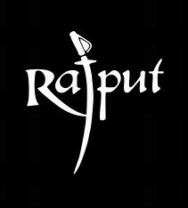

What , when and where
The Rajputs are a prominent community in India known for their rich history and warrior culture. They originated in the region that is now Rajasthan, which is located in northwestern India. The term "Rajput" is derived from the Sanskrit word "Rajaputra," meaning "son of a king" or "prince." The Rajputs rose to prominence during the medieval period and established several powerful kingdoms and dynasties in various parts of India.
Related Information
